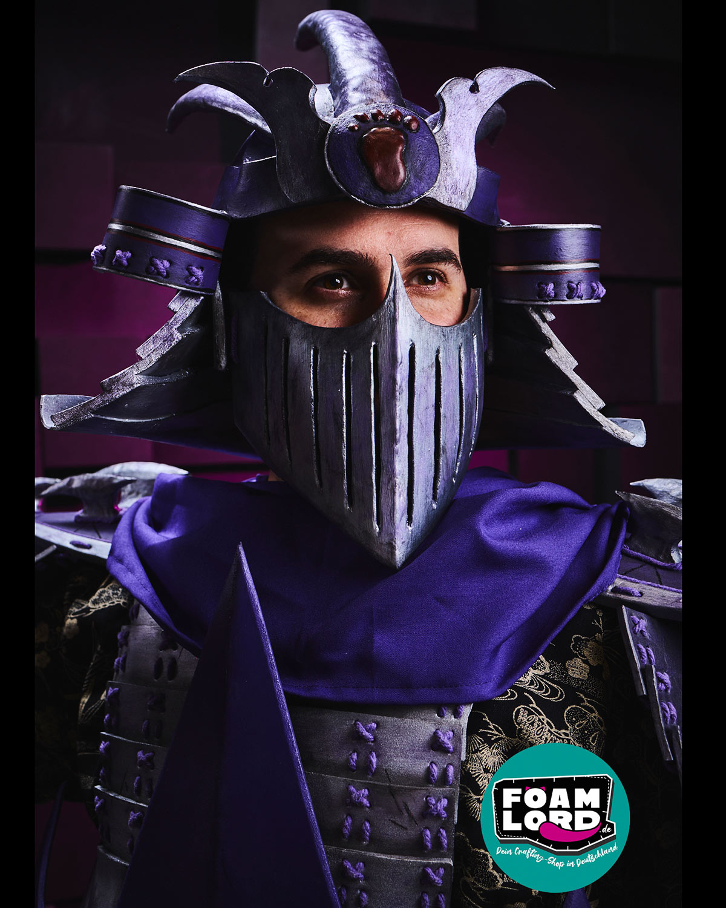

Toyfotografie
Hier gehts zur ausgewählten Toyfotografie-Galerie.
Zur Toyfotografie-SeiteToyshots | Cosplay Builds | Creative Videos
Toyshots | Cosplay Builds | Creative Videos
Egal ob Werkbank oder Kamera: selbstgebaute Cosplays, actionreiche Toyshots und Videos/Reels gibt's hier auf die Zwölf.
Drei Welten, ein Einstieg. Wohin soll's gehen?

Unter meinem Namen vereinen sich Toyfotografie und Cosplay-Bastelei — zwei kreative Wege aus derselben Popkultur-Leidenschaft.
Toyfotografie steht für inszenierte Momente mit Atmosphäre, Cosplay für Bau, Handwerk und das Tragen eigener Figuren auf Cons. Verbunden werden beide durch Videos und Reels, in denen ich Prozesse, BTS und fertige Ergebnisse sichtbar mache.
Mehr über Ujio erfahren